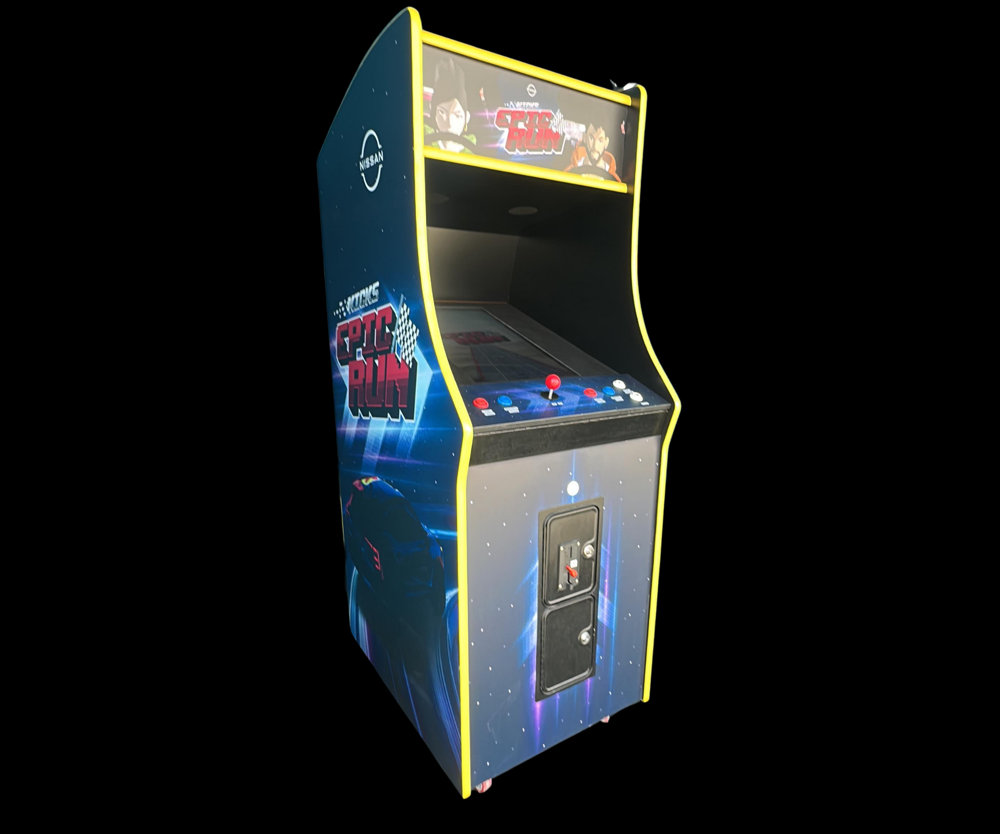
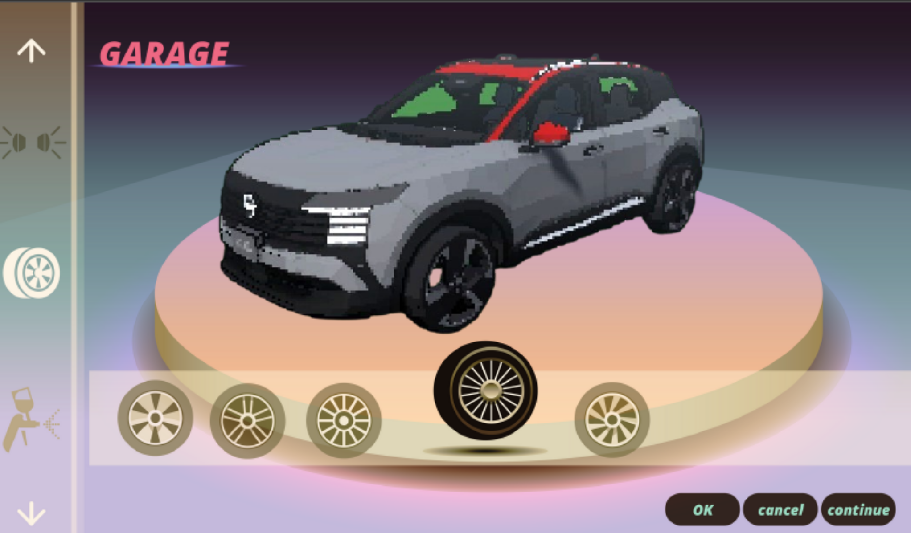
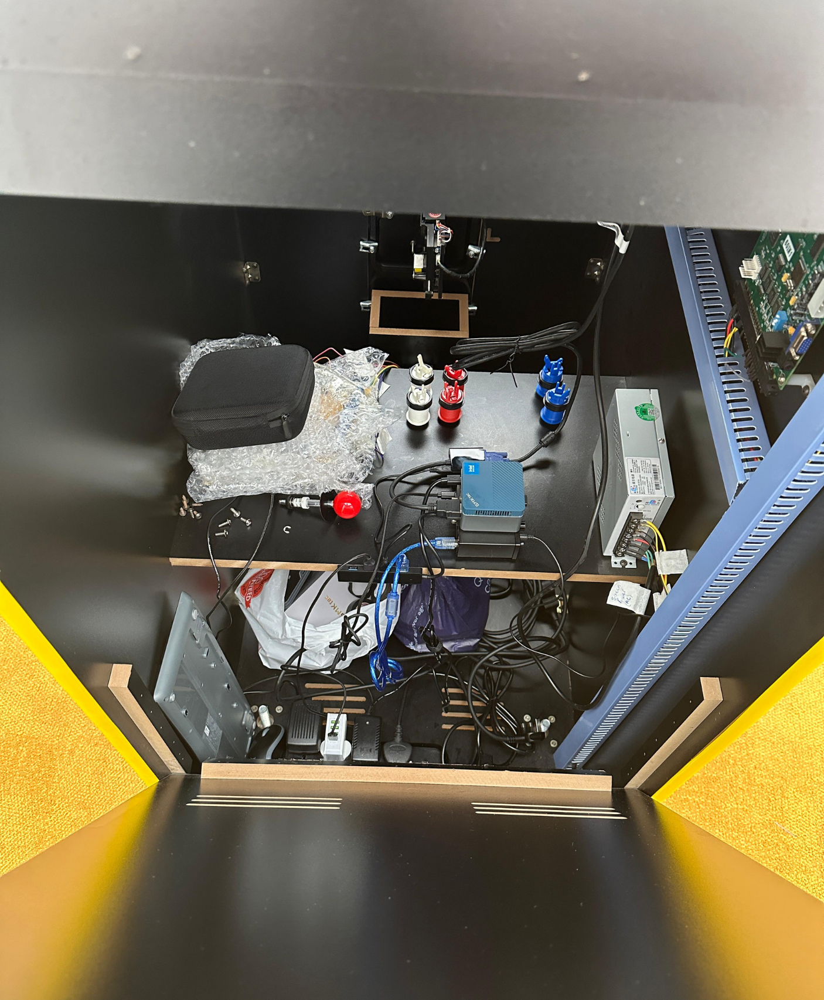
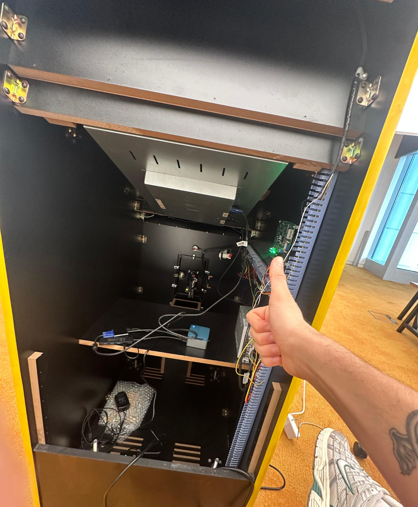
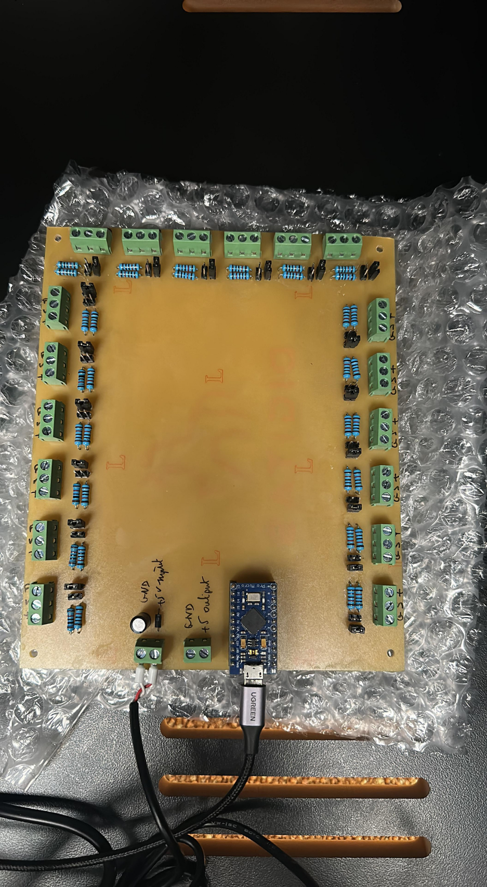
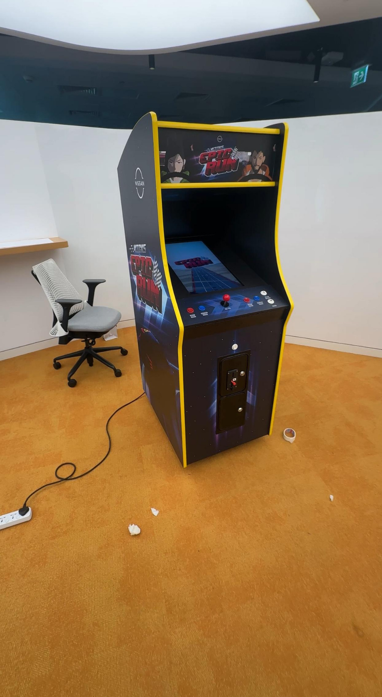
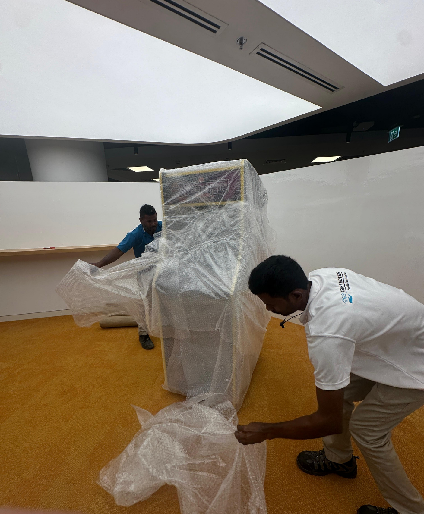
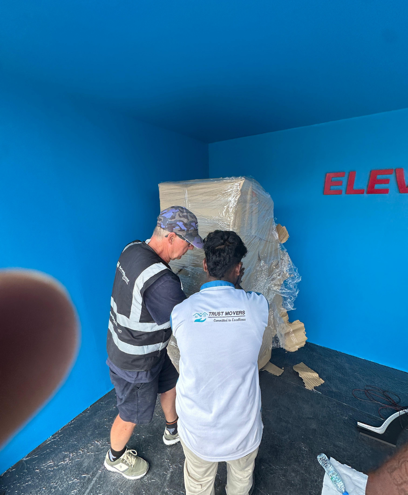
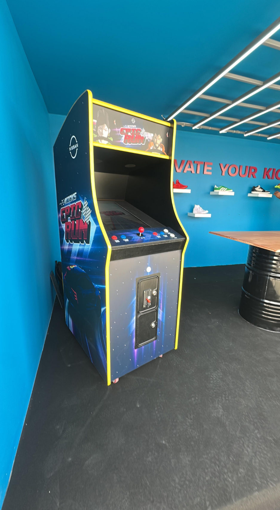

As part of the Nissan Kicks launch event, we wanted to create something fun, nostalgic, and
interactive; a physical experience that embodied the youthful spirit of the car.
The brief: build a fully functional arcade cabinet and design a retro-style driving game that
would let players race the new Nissan Kicks through iconic Middle Eastern cities.
Working at Digitas, I led the full development of the arcade hardware; from planning and
sourcing components to wiring, fabrication, and system integration, while collaborating with a
creative team on the game concept, design, and narrative.
Nissan’s goal was to create an experience that would attract people to the Kicks launch event,
engage them through play, and reinforce the car’s personality: young, dynamic, and full of
energy.
We needed a solution that:
- Feels retro yet modern, merging nostalgia with the Kicks’ new identity.
- Could be built, programmed, and deployed under a tight deadline.
- Seamlessly connects software and hardware for a smooth user experience.
The project began with benchmarking existing arcades; studying cabinet dimensions, input
systems, and control layouts. We explored:
- The best operating systems for running custom games on local hardware.
- Methods to interface arcade controls with modern PCs.
- Optimal screen size, audio systems, wiring, and power management for an event
environment.
Given the tight timeline, we decided not to build a cabinet from scratch. Instead, I sourced and
purchased an existing arcade that met our physical and ergonomic criteria. After a series of
technical inspections, we stripped it down completely, keeping only the essentials such as the
joysticks, buttons, speakers, and lighting.
While the physical arcade was being rebuilt, I was also working with the creative team to design the Kicks Arcade Game: A retro-styled racing experience that captured the joy of driving the all-new Kicks.
Players would:
- Choose between two region-friendly characters.
- Customize their car with color, wheels, and accessories.
- Race through regional maps like Lebanon’s coast, Dubai’s neon skyline, and Saudi desert
stretches.
Each map featured localized visuals and soundtracks tailored to Nissan’s Middle East markets.
The gameplay was intentionally balanced to make most players finish first, symbolizing how the Kicks “leads the pack.”

To power the experience, we integrated a mini PC with sufficient specs to run the game locally and ensure stable frame
rates. I collaborated with hardware partners to design a custom PCB that connected the arcade’s controls to the PC,
ensuring low-latency input.
Inside the cabinet, I handled all electrical wiring, power routing, LED lighting, and speaker integration, including:
- 3D-printed mounts for securing electronic components.
- Custom power management to support continuous event operation.
- Optimized ventilation and cable routing for safety and maintainability.
Once assembled, we applied Nissan-branded skins developed by our internal creative team, completing the transformation
from a retro arcade shell into a branded experience piece.



The Kicks Arcade debuted at the Nissan Kicks launch event, alongside the Kicks Key project. Visitors lined up to play,
race, and share their scores, turning the installation into one of the event’s main attractions.
The tactile mix of retro hardware and modern design drew consistent attention, both from guests and Nissan’s own team,
showing how engineering and storytelling can come together to make an experience memorable.




Problem: Nissan needed an interactive experience that would attract and engage
event visitors.
Method: Repurposed and re-engineered an existing arcade, combining hardware, software, and branding into one cohesive
activation.
Result: A fully functioning, Nissan-branded arcade that became the centerpiece of the launch event, merging engineering
precision, creative design, and cultural relevance.
Credits: Developed at Digitas Middle East, in collaboration with Nissan and
technical/creative partners.